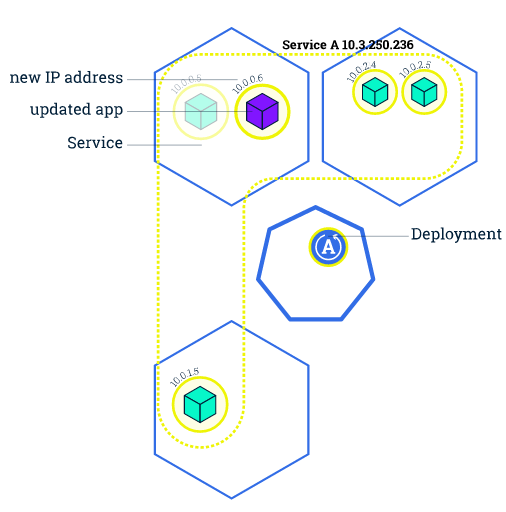
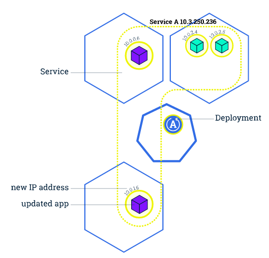

Kubernetes 201
扩展应用
通过修改 Deployment 中副本的数量（replicas），可以动态扩展或收缩应用：

这些自动扩展的容器会自动加入到 service 中，而收缩回收的容器也会自动从 service 中删除。
$ kubectl scale --replicas=3 deployment/nginx-app
$ kubectl get deploy
NAME DESIRED CURRENT UP-TO-DATE AVAILABLE AGE
nginx-app 3 3 3 3 10m
滚动升级
滚动升级（Rolling Update）通过逐个容器替代升级的方式来实现无中断的服务升级：
kubectl rolling-update frontend-v1 frontend-v2 --image=image:v2




在滚动升级的过程中，如果发现了失败或者配置错误，还可以随时回滚：
kubectl rolling-update frontend-v1 frontend-v2 --rollback
需要注意的是，kubectl rolling-update 只针对 ReplicationController。对于更新策略是 RollingUpdate 的 Deployment（Deployment 可以在 spec 中设置更新策略为 RollingUpdate，默认就是 RollingUpdate），更新应用后会自动滚动升级：
spec:
replicas: 3
selector:
matchLabels:
run: nginx-app
strategy:
rollingUpdate:
maxSurge: 1
maxUnavailable: 1
type: RollingUpdate
而更新应用的话，就可以直接用 kubectl set 命令：
kubectl set image deployment/nginx-app nginx-app=nginx:1.9.1
滚动升级的过程可以用 rollout 命令查看:
$ kubectl rollout status deployment/nginx-app
Waiting for rollout to finish: 2 out of 3 new replicas have been updated...
Waiting for rollout to finish: 2 of 3 updated replicas are available...
Waiting for rollout to finish: 2 of 3 updated replicas are available...
Waiting for rollout to finish: 2 of 3 updated replicas are available...
Waiting for rollout to finish: 2 of 3 updated replicas are available...
Waiting for rollout to finish: 2 of 3 updated replicas are available...
deployment "nginx-app" successfully rolled out
Deployment 也支持回滚：
$ kubectl rollout history deployment/nginx-app
deployments "nginx-app"
REVISION CHANGE-CAUSE
1 <none>
2 <none>
$ kubectl rollout undo deployment/nginx-app
deployment "nginx-app" rolled back
资源限制
Kubernetes 通过 cgroups 提供容器资源管理的功能，可以限制每个容器的 CPU 和内存使用，比如对于刚才创建的 deployment，可以通过下面的命令限制 nginx 容器最多只用 50% 的 CPU 和 128MB 的内存：
$ kubectl set resources deployment nginx-app -c=nginx --limits=cpu=500m,memory=128Mi
deployment "nginx" resource requirements updated
这等同于在每个 Pod 中设置 resources limits：
apiVersion: v1
kind: Pod
metadata:
labels:
app: nginx
name: nginx
spec:
containers:
- image: nginx
name: nginx
resources:
limits:
cpu: "500m"
memory: "128Mi"
健康检查
Kubernetes 作为一个面向应用的集群管理工具，需要确保容器在部署后确实处在正常的运行状态。Kubernetes 提供了两种探针（Probe，支持 exec、tcpSocket 和 http 方式）来探测容器的状态：
- LivenessProbe：探测应用是否处于健康状态，如果不健康则删除并重新创建容器
- ReadinessProbe：探测应用是否启动完成并且处于正常服务状态，如果不正常则不会接收来自 Kubernetes Service 的流量
对于已经部署的 deployment，可以通过 kubectl edit deployment/nginx-app 来更新 manifest，增加健康检查部分：
apiVersion: extensions/v1beta1
kind: Deployment
metadata:
labels:
app: nginx
name: nginx-default
spec:
replicas: 3
selector:
matchLabels:
app: nginx
template:
metadata:
labels:
app: nginx
spec:
containers:
- image: nginx
imagePullPolicy: Always
name: http
resources: {}
terminationMessagePath: /dev/termination-log
terminationMessagePolicy: File
resources:
limits:
cpu: "500m"
memory: "128Mi"
livenessProbe:
httpGet:
path: /
port: 80
initialDelaySeconds: 15
timeoutSeconds: 1
readinessProbe:
httpGet:
path: /
port: 80
initialDelaySeconds: 5
timeoutSeconds: 1